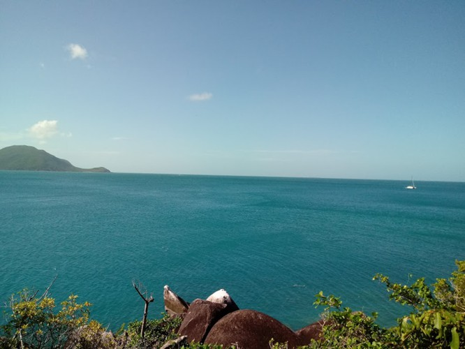

Ideas
— K52U82 (JPEG) - view original (119 KiB, JPG)
This is an unordered list of projects I would like to tackle in the future. Of course, that doesn't mean I actually will. Feel free to work on any of them if you are interested.
- A music sequencer / tracker like Soundtracker, Fasttracker or LSDJ.
- A real-mode operating system inspired by CP/M or DOS.
- A fantasy console like PICO-8, or a virtual machine like uxn.
- A visual novel with 1-bit graphics (maybe using the fantasy console from the previous point and released for multiple platforms).
- Learn to sail. Again.
- Do something with RISC OS. I don't know what.
- Learn Electron.
- Learn Swedish.
- Release a desktop version of Soft Drizzle using Electron.
- Release Soft Drizzle: B-Track (v1.1) for Windows.
- Upload some of my music to Bandcamp.
More will be added!


Lartu © 2015 - 2021 — Released under the
Creative Commons Attribution-NonCommercial-ShareAlike 3.0 Unported
License.